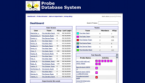

Check out our projects by visiting the links below. If the site requires a login just use the username "demo" and the password "demo".
Clover
The Voltage Probe Database (Clover) is a prototype of a Yogo based tool for a distributed collaborative project that produces specific voltage activated fluorescent probes that are distributed to international teams that then do experiments on the probes and share the results with the entire collaboration. There are currently five teams, outside the primary probe producting team. The underlying yogo data model for the project is fairly simple which made this a relatively easy prototype to build, and once built it's been well used and provided very good feedback for the yogo development team.
Clover has been a success for the distributed collaborative team working on the project. The intial implementation went through a few quick revisions to accomodate the needs of the project, but it quickly became apparent that the project was using the tool as a critical component of their ongoing research. The VPD provides the mechanism for teams to share experimental data with each other and comment or inquire on experimental data shared. One of the more interesting aspects of the success of the VPD comes from the fact the NIH Science Officer regularly uses the tool to track the progress of the project and of each of the teams participating. This real-time information for the Science Office was an unforeseen benefit of the system that is significantly influencing the design of the future applications that use the Yogo Toolkit.
Clover has contributed to the Yogo Toolkit development by highlighting the importance of a flexible user management system, so projects can create new types of users, e.g. Science Office, Program Manager, Protocol Oversight Committee Member, etc, which allow better interaction with the auxillary members of the projects that are not working directly on the scientific inquiry at the core of the project. The most important aspect of VPD that has had the greatest impact is the dashboard for the project, as seen in image XY. This dashboard is what is presented to all users when they log in to the VPD, it contains a summary of the most important aspects of the project so that all users can get up to date on the project in a quick glance.